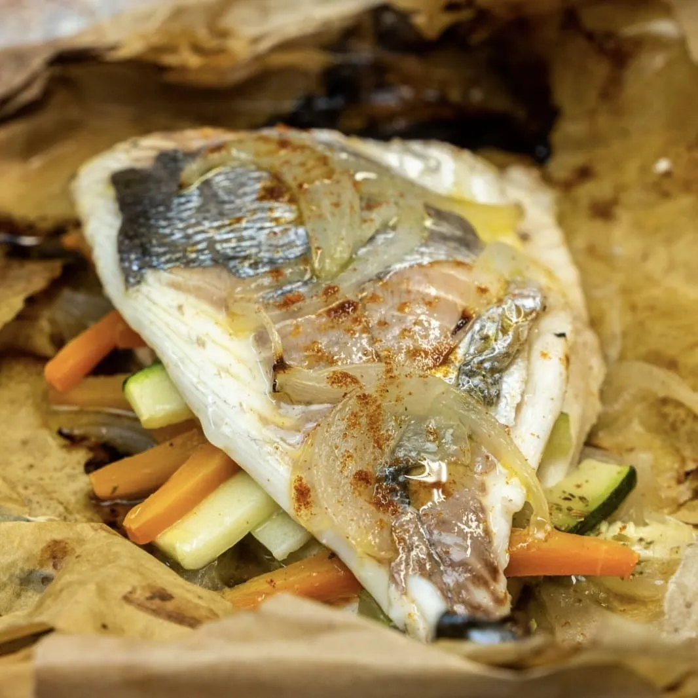

⏲ 15 minuts 👥 1 persona

Per començar la Quaresma amb bones intencions, aquest diumenge us proposem fer aquesta orada a la
papillota. És una tècnica que ja us hem proposat en altres ocasions, però que val la pena utilitzar
de manera
recurrent: és molt senzilla i ens donarà resultats excel·lents.
Ingredients:
- 1 orada (2 lloms nets)
- 1 ceba
- 1 carabassó
- 1 pastanaga
- 1 gra d'all
- Herbes aromàtiques
- Oli, sal i pebre
- Preescalfem el forn a 200 graus.
- Tallem les verdures a bastonets, i la ceba a juliana.
- Fem la papillota estenent el paper de forn sobre la safata. Al centre hi col·loquem una base de ceba, un dels lloms de l'orada, el carabassó i la pastanaga, i tanquem amb l'altre llom. Acabem amb més ceba i un gra d'all al capdamunt. Ho anem amanint tot amb oli, sal, pebre i les herbes aromàtiques.
- Tanquem el peix amb el paper com si féssim un paquet, procurant que l'aire no tingui lloc per on escapar-se. Abaixem el forn a 180 graus i enfornem uns 15 o 20 minuts.